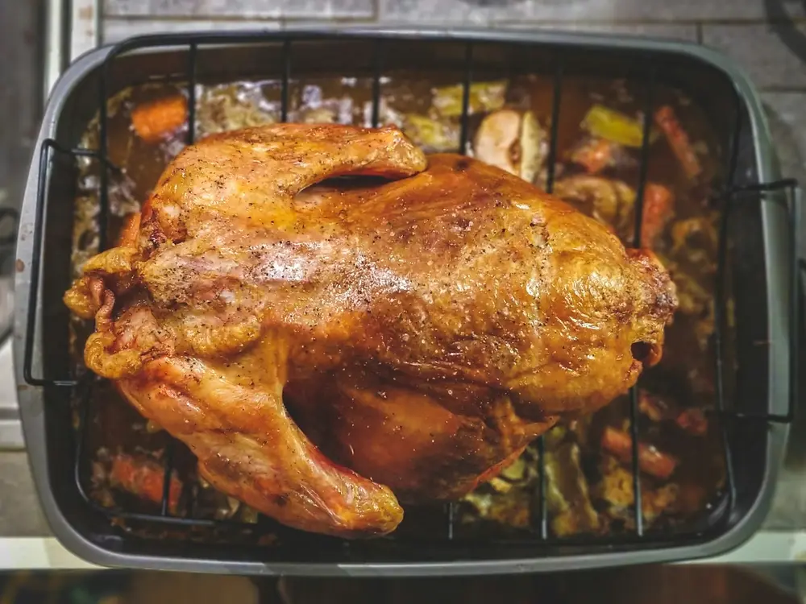

Home › Dinner › Chicken
The best lemon & herb roast chicken (my family’s favourite!)
Jump to recipeThere’s something about a Sunday roast that takes me straight back to my grandmother’s kitchen. The windows would fog up, the radio would be on, and the whole house smelled of lemon and thyme long before anyone sat down. I’ve made this chicken more times than I can count, and over the years I’ve tweaked it into the version you see today.

Before we get to the recipe, let’s talk about why this method works so well. The secret is in how you prepare the skin, and there are a few things you’ll want to know about choosing your chicken, which I’ll cover in detail below.
Advertisement
First, a little story about the first time I made this for a crowd…